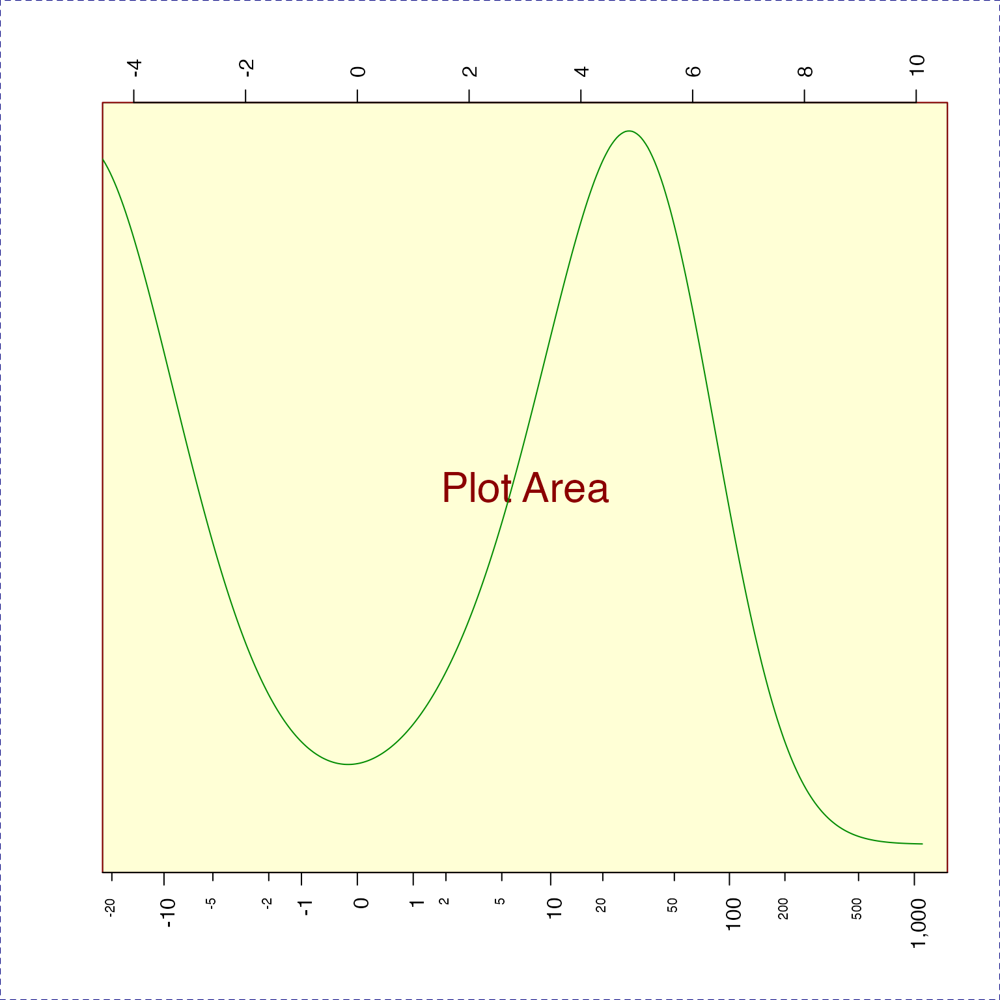
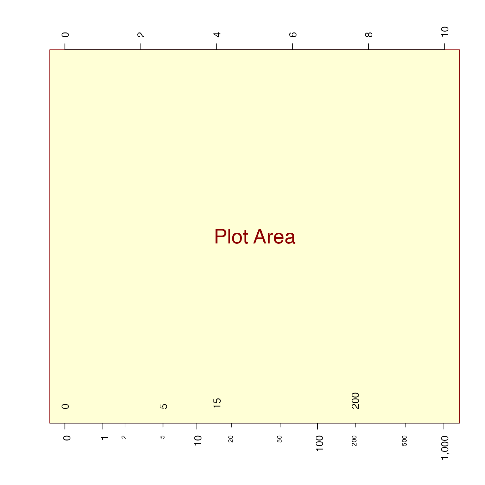
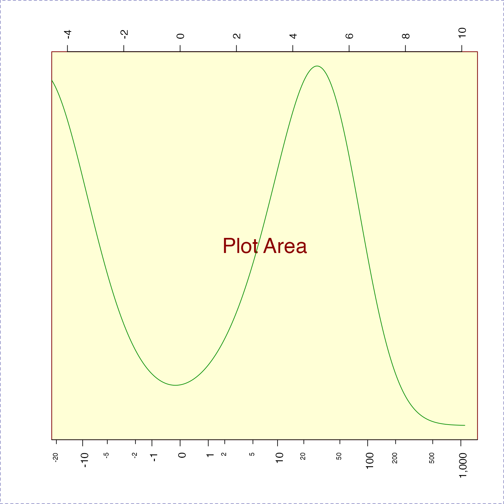
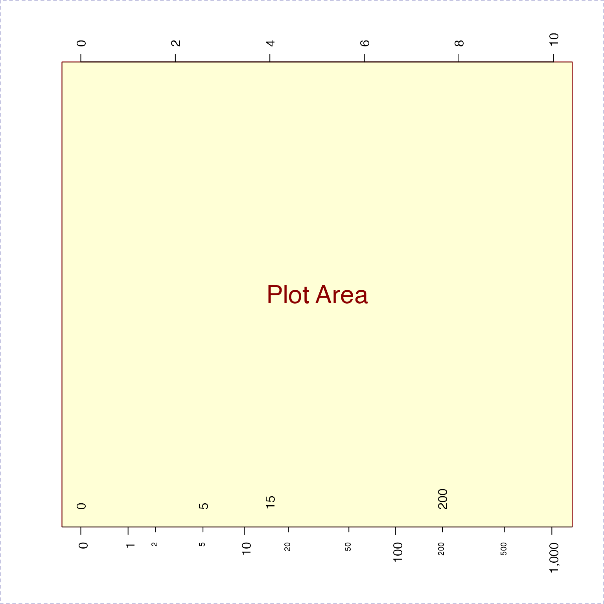

Calculate major and minor tick marks for log-scale axis
Arguments
- side
integer value indicating which axis to produce tick marks, 1=bottom, 2=left, 3=top, 4=right.
- lims
numeric vector length=2, indicating specific numeric range to use for tick marks.
- logBase
numeric value indicating the logarithmic base, assumed to be applied to the numeric
limslimits, or the axis range, previously.- displayBase
numeric value indicating the base used to position axis labels, typically
displayBase=10is used to draw labels at typical positions.- logStep
integer value indicating the number of log steps between major axis label positions. Typically
logStep=1will draw a label every log position based upondisplayBase, for exampledisplayBase=10andlogStep=1will usec(1,10,100,1000); anddisplayBase=10andlogStep=2would usec(1,100,10000).- minorWhich
integer vector of values to label, where those integer values are between 1 and
displayBase, for exampledisplayBase=10may label onlyc(2,5), which implies minor tick labels atc(2, 5, 20, 50, 200, 500). Any minor labels which would otherwise equal a major tick position are removed. By default, whendisplayBase=2,minorWhich=c(1.5)which has the effect of drawing one minor label between each two-fold major tick label.- asValues
logical indicating whether to create exponentiated numeric labels. When
asValues=FALSE, it createsexpressionobjects which include the exponential value. UseasValues=FALSEandlogAxisType="pvalue"to draw P-value labels.- offset
numeric value added during log transformation, typically of the form
log(1 + x)whereoffset=1. The offset is used to determine the accurate numeric label such that values of0are properly labeled by the original numeric value.- symmetricZero
logical indicating whether numeric values are symmetric around zero. For example, log fold changes should use
symmetricZero=TRUEwhich ensures a log2 value of-2is labeled-4to indicate a negative four fold change. IfsymmetricZero=FALSEa log2 value of-2would be labeled0.0625.- verbose
logical indicating whether to print verbose output.
- ...
additional parameters are ignored.
Value
List of axis tick positions, and corresponding labels, for major and minor ticks. Major ticks are defined as one tick per log10 unit, exponentiated. For example, 1, 10, 100, 1000.
Details
This function calculates log units for the axis of an
existing base R plot. It
calculates appropriate tick and label positions for major
steps, which are typically in log steps; and minor steps, whic
are typically a subset of steps at one lower log order.
For example, log 10 steps would be: c(1, 10, 100, 1000),
and minor steps would be c(2, 5, 20, 50, 200, 500, 2000, 5000).
This function was motivated in order to label log-transformed
data properly in some special cases, like using log2(1+x)
where the resulting values are shifted "off by one" using
standard log-scaled axis tick marks and labels.
Also, when using log fold change values, this function
creates axis labels which indicate negative fold change
values, for example -2 in log2 fold change units would
be labeled with fold change -4, and not 0.0625 which
represents a fractional value.
Use the argument symmetricZero=TRUE when using directional
log fold change values.
See also
Other jam practical functions:
breakDensity(),
checkLightMode(),
check_pkg_installed(),
colNum2excelName(),
color_dither(),
diff_functions(),
exp2signed(),
fileInfo(),
fixYellow(),
getAxisLabel(),
handleArgsText(),
heads(),
isFALSEV(),
isTRUEV(),
jamba,
jargs(),
kable_coloring(),
lldf(),
log2signed(),
make_html_styles(),
make_styles(),
match_unique(),
mergeAllXY(),
middle(),
newestFile(),
printDebugI(),
printDebug(),
renameColumn(),
rmInfinite(),
rmNAs(),
rmNA(),
rmNULL(),
sclass(),
sdim(),
setPrompt()
Examples
## This example shows how to draw axis labels manually,
## but the function minorLogTicksAxis() is easier to use.
xlim <- c(0,4);
nullPlot(xlim=xlim, doMargins=FALSE);
mlt <- minorLogTicks(1,
logBase=10,
offset=1,
minTick=0);
#> Warning: coercing argument of type 'double' to logical
maj <- subset(mlt$allLabelsDF, type %in% "major");
axis(1, las=2,
at=maj$tick, label=maj$text);
min <- subset(mlt$allLabelsDF, type %in% "minor");
axis(1, las=2, cex.axis=0.7,
at=min$tick, label=min$text,
col="blue");
text(x=log10(1+c(0,5,50,1000)), y=rep(1.7, 4),
label=c(0,5,50,1000), srt=90);
 nullPlot(xlim=c(-4,10), doMargins=FALSE);
axis(3, las=2);
minorLogTicksAxis(1, logBase=2, displayBase=10, symmetricZero=TRUE);
#> Warning: coercing argument of type 'double' to logical
nullPlot(xlim=c(-4,10), doMargins=FALSE);
axis(3, las=2);
minorLogTicksAxis(1, logBase=2, displayBase=10, symmetricZero=TRUE);
#> Warning: coercing argument of type 'double' to logical
 nullPlot(xlim=c(-4,10), doMargins=FALSE);
axis(3, las=2);
minorLogTicksAxis(1, logBase=2, displayBase=10, offset=1);
#> Warning: coercing argument of type 'double' to logical
x2 <- rnorm(1000) * 40;
d2 <- density(log2(1+abs(x2)) * ifelse(x2<0, -1, 1));
lines(x=d2$x, y=normScale(d2$y)+1, col="green4");

nullPlot(xlim=c(0,10), doMargins=FALSE);
axis(3, las=2);
minorLogTicksAxis(1, logBase=2, displayBase=10, offset=1);
#> Warning: coercing argument of type 'double' to logical
x1 <- c(0, 5, 15, 200);
text(y=rep(1.0, 4), x=log2(1+x1), label=x1, srt=90, adj=c(0,0.5));
points(y=rep(0.95, 4), x=log2(1+x1), pch=20, cex=2, col="blue");

nullPlot(xlim=c(-4,10), doMargins=FALSE);
axis(3, las=2);
minorLogTicksAxis(1, logBase=2, displayBase=10, offset=1);
#> Warning: coercing argument of type 'double' to logical
x2 <- rnorm(1000) * 40;
d2 <- density(log2(1+abs(x2)) * ifelse(x2<0, -1, 1));
lines(x=d2$x, y=normScale(d2$y)+1, col="green4");

nullPlot(xlim=c(0,10), doMargins=FALSE);
axis(3, las=2);
minorLogTicksAxis(1, logBase=2, displayBase=10, offset=1);
#> Warning: coercing argument of type 'double' to logical
x1 <- c(0, 5, 15, 200);
text(y=rep(1.0, 4), x=log2(1+x1), label=x1, srt=90, adj=c(0,0.5));
points(y=rep(0.95, 4), x=log2(1+x1), pch=20, cex=2, col="blue");
